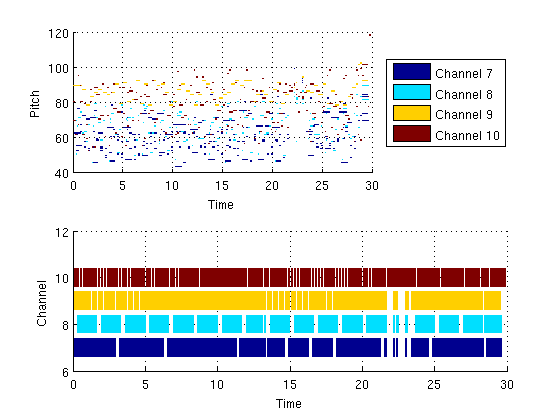
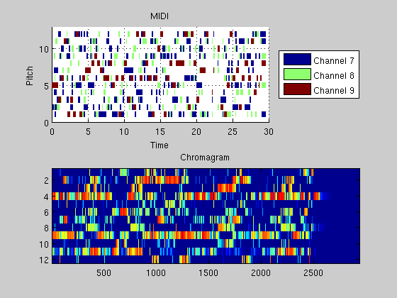
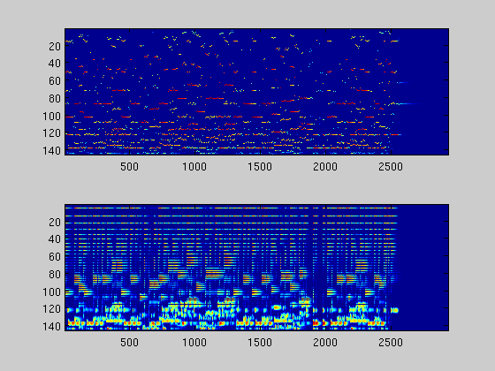

Contents
ISP_MIDIDEMO Demonstration of midi input/output
Read a midi file into Matlab, plot it, manipulates it, and synthesizes it.
soundfont=fullfile(isp_toolboxpath, 'FluidR3 GM.SF2'); midifile=fullfile(isp_toolboxpath, 'shortmidifiles', '50s Rock.mid');
Read note definition matrix, instrument definition matrix and control information
midi = isp_midiread(midifile);
Executing /home/jesper/no_backup/isptoolbox/toolbox/isp_mf2t.GLNX86 "/home/jesper/no_backup/isptoolbox/toolbox/shortmidifiles/50s Rock.mid" "/tmp/fileu21ZP4.txt"
Show MIDI file
subplot(2,1,1) isp_midishow(midi) subplot(2,1,2) isp_midishow(midi, 'yaxis', 'channels')
Modify MIDI file
Remove drums and other percussive instruments
midi = isp_midimodify(midi, 'percussion', false);
Display played instruments
instrmat = midi.instruments; fprintf('Old instruments:\n') for n=1:size(instrmat, 1) if instrmat(n, 2) ~= 10 % Skip if channel 10 (percussive instruments) fprintf('On channel %d instrument %d (%s) is played\n', ... instrmat(n, 2), instrmat(n, 3), ... isp_midigmname(instrmat(n, 2))) end end
Old instruments: On channel 7 instrument 26 (Harpsichord) is played On channel 8 instrument 1 (Clavi) is played On channel 9 instrument 33 (Celesta) is played
Change instrumentation. Set instruments to be glockenspiel, basson, muted electric guitar and banjo (see http://www.midi.org/about-midi/gm/gm1sound.shtml)
instrmat(1, 3) = 10; instrmat(2, 3) = 71; instrmat(3, 3) = 29; instrmat(4, 3) = 106; midi.instruments=instrmat;
Display played instruments
fprintf('New instruments:\n') for n=1:size(instrmat, 1) if instrmat(n, 2) ~= 10 % Skip if channel 10 (percussive instruments) fprintf('On channel %d instrument %d (%s) is played\n', ... instrmat(n, 2), instrmat(n, 3), ... isp_midigmname(instrmat(n, 2))) end end
New instruments: On channel 7 instrument 10 (Harpsichord) is played On channel 8 instrument 71 (Clavi) is played On channel 9 instrument 29 (Celesta) is played
Convert to wave
[wav, fs]=isp_midisynth(midi, 'soundfont', soundfont); % Alternatively, one could have written a new midifile and synthesized it:
Executing /home/jesper/no_backup/isptoolbox/toolbox/isp_t2mf.GLNX86 "/tmp/fileLuY22T.txt" "/tmp/fileUw87dH.mid" Executing /home/jesper/no_backup/isptoolbox/toolbox/isp_timidity.GLNX86 -idq -s 44100 -Ow --output-mono -o "/tmp/fileHKCqYp.wav" -c "/tmp/fileNKGOIb.cfg" "/tmp/fileUw87dH.mid" /proc/share/timidity/timidity.cfg: No such file or directory Playing /tmp/fileUw87dH.mid
Write altered midi file
%isp_midiwrite(midi, 'testfile.mid');
Read MIDI file as wav. If no further arguments are specified, a 44100
Hz mono signal is returned.
%[wav, fs, nbits] = isp_midisynth('testfile.mid', soundfont); %wavwrite(wav, fs, nbits, 'testfile.wav'); figure(2) subplot(2,1,1) isp_midishow(midi, 'singleoctave', true) title('MIDI') subplot(2,1,2) [Y,p,m,S] = isp_ifchromagram(wav, fs); imagesc(log(0.1*mean(Y(:))+Y)) title('Chromagram') figure(3) fl=100; fh=1600; nNotesPerOctave = 36; nFreq=4*nNotesPerOctave+1; freq = logspace(log10(fl), log10(fh), nFreq); nTimes = size(Y,2); subplot(2,1,1) sp=zeros(nFreq, nTimes); for n=1:nTimes nz = find(p(:,n)); mapping = abs(repmat(p(nz,n), 1, nFreq) - repmat(freq(:)', length(nz), 1)); [dummy, mapping] = min(mapping, [], 2); sp(mapping, n) = m(nz, n); end imagesc((log(0.1*mean(sp(:))+sp))) subplot(2,1,2) fftlen=2^round(log2(44100/1600*size(S,1))); sp=zeros(nFreq, nTimes); mapping = abs(repmat(fs*(0:size(S,1)-1)'/fftlen, 1, nFreq) - repmat(freq(:)', size(S,1), 1)); [dummy, mapping] = min(mapping, [], 2); for n=1:size(S,1) sp(mapping(n), :) = sp(mapping(n), :) + abs(S(n,:).^2); end imagesc((log(0.1*mean(sp(:))+sp))) 
| Intelligent Sound Processing Toolbox | Contents |